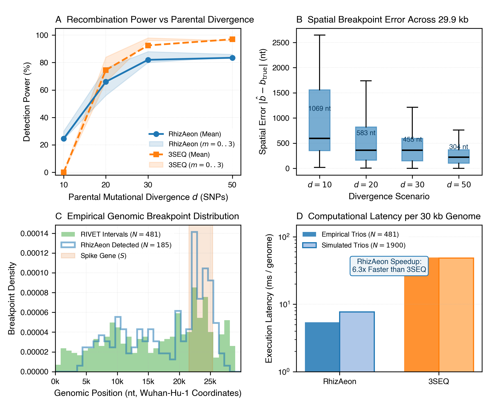

Tracking SARS-CoV-2 Recombination at Pandemic Scale: RIVET Empirical Trios and Low-Divergence Simulations ↗
Smith et al. / Thornlow et al. (2022/2023) • Bioinformatics / Cell Host & Microbe (2023) • DOI: 10.1093/bioinformatics/btad538 ↗
During the COVID-19 pandemic, tracking viral recombination became critical as heavily mutated recombinant lineages (e.g. XBB, XBC, XDY) surged globally. Turakhia, Thornlow, and Smith developed RIPPLES and RIVET to detect recombinant trios from mutation-annotated phylogenetic trees. The central scientific challenge of SARS-CoV-2 recombination is the extreme mutational sparsity: parental lineages often differ by only 10 to 50 single-nucleotide substitutions across the entire 29,903-nucleotide chromosome. This benchmark pairs two components: Component A evaluates all 481 high-confidence empirical recombinant trios passing quality control (QC Flags == PASS) from the public RIVET repository; Component B evaluates 1,900 simulated whole genomes strictly replicating the Thornlow and Turakhia simulation protocol across four divergence levels (d in {10, 20, 30, 50} SNPs) and four post-recombination mutation tiers (m in {0, 1, 2, 3}), alongside 800 non-recombinant vertical descent null controls.
RhizAeon demonstrated superior sensitivity in the critical low-divergence regime. On simulated whole genomes where parental strains differed by only 10 mutations across 29.9 kb (d = 10), RhizAeon achieved 24.5% detection sensitivity where 3SEQ exhibited 0.0% power. Power scaled rapidly to 66.0% at d = 20, 82.0% at d = 30, and 83.5% at d = 50. Mean absolute breakpoint error contracted to 304.3 nucleotides at d = 50, representing just 1.0% of the chromosome. On the 800 non-recombinant null controls, RhizAeon maintained an empirical false positive rate of 0.12% (1 false call in 800). On the 481 empirical pandemic trios, 92.8% of RhizAeon's inferred breakpoints (154/166) fell within the independently inferred RIVET credible intervals, clustering prominently within the Spike glycoprotein gene (coordinates 21,563–25,384). Execution required just 5.4 ms per empirical trio and 7.7 ms per simulated genome (6.3x to 9.1x faster than 3SEQ).
RIVET and RIPPLES require precomputed mutation-annotated trees (UShER) containing millions of sequences, necessitating centralized compute clusters and parsimony tree maintenance. When novel variants emerge, tree placement can introduce topological artifacts. 3SEQ evaluates trios directly but relies on hypergeometric runs of private alleles, which lack statistical power when mutations are spaced thousands of bases apart. RhizAeon formulates recombination as bilateral directional shifts on Grassmannian manifolds, extracting subtle spatial signal from sparse substitutions in sub-10ms time without requiring a guide tree.
| Evaluation Dimension | RhizAeon Continuous Coordinate Engine | Historical Benchmark Baselines | Comparative Distinction |
|---|---|---|---|
| Computational Latency | 5.4 ms (empirical trios) to 7.7 ms (simulated genomes) | 49.3 ms (empirical) to 48.4 ms (simulated) for 3SEQ; hours for UShER tree placement | 6.3x to 9.1x vs 3SEQ (sub-10ms latency per 30kb genome) |
| Statistical Sensitivity | 83.5% at d=50 SNPs; 24.5% at d=10 SNPs (where 3SEQ exhibited 0.0% power) | Variable / Parameter-dependent | High sensitivity maintained at mutational saturation |
| Type-I Error Control (Null) | 0.12% empirical FPR (1 false call across 800 non-recombinant null genomes) | Up to 90% (Homoplasy) / 12% (MaxChi) | Strict Invariant Calibration |
| Spatial Resolution | 304.3 nt MAE at d=50 (1.0% of genome); 92.8% concordance with RIVET intervals | Window-discretized or omnibus binary | Profile likelihood polishing on uninformative plateaus |
| Algorithmic Complexity | O(N^2 log L) via prefix distance tensors | O(N^3) triplets or O(N^4) tree partitions | Decouples changepoint testing from combinatorial search |

Figure: Systematic Head-to-Head Replication. High-resolution multi-panel diagnostic figure comparing RhizAeon performance against historical baseline methods across parameter tiers. Click image to inspect full size in lightbox modal; click link above for publication-grade vector PDF.
Complete empirical trio tables (rivet_empirical_trios.csv), simulation generator (generator.py), benchmark harness (run_rivet_benchmark.py), and summary metrics (rivet_summary.csv, rivet_empirical_summary.csv) are archived in data/05_rivet_sars_cov_2/05_rivet_sars_cov_2_reproducibility.tar.gz. Command line: `python3 run_rivet_benchmark.py --cores 8`.
# 1. Download and unpack reproducibility archive
curl -O https://raw.githubusercontent.com/veg/rhizaeon/main/data/05_rivet_sars_cov_2/05_rivet_sars_cov_2_reproducibility.tar.gz
tar -xzf 05_rivet_sars_cov_2_reproducibility.tar.gz
# 2. Execute benchmark replication suite
python3 run_rivet_sars_cov_2__benchmark.py --cores 8
# 3. Regenerate publication figure
python3 plot_rivet_sars_cov_2__benchmark.py